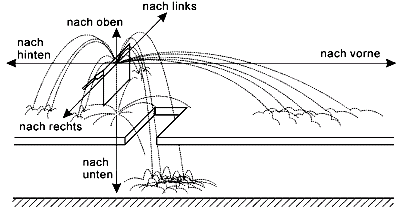
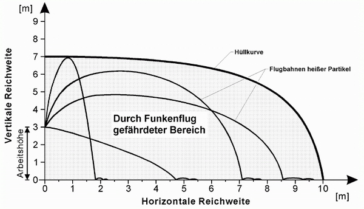

Die maßgeblichen Angaben über die Reichweiten in Tabelle 1 sind Anhaltswerte zur Bestimmung des durch Funkenflug gefährdeten Bereiches und berücksichtigen die Gesamtreichweite und das Zündvermögen heißer Metall- oder Schlacketeilchen bei fachgerechter Ausführung der Arbeiten und ungünstigen Arbeitsbedingungen. Übliche Verfahrensstörungen, z. B. Brennerabknall, sind eingeschlossen.
Die Reichweiten für den horizontalen Bereich umfassen auch mögliche Ablenkungen der Partikel aus ihrer Flugbahn durch Hindernisse in der Umgebung, z. B. Gerüste, Geländer. Die Reichweiten für thermisches Trennen schließen auch die für Schleifarbeiten ein.
Raumbegrenzungen und wirksame Abschirmungen können diese Bereiche beschränken.
Ausdehnung und Form des durch Funkenflug gefährdeten Bereiches ergeben sich aus den Bewegungsbahnen heißer Partikel (siehe Bild 1) mit den Maßen aus Tabelle 1 und Bild 2.
Bei Arbeitshöhen über 3 m ist als Richtwert anzunehmen, dass sich mit jedem Meter zusätzlicher Arbeitshöhe der Bereich in der Horizontalen um etwa 0,5 m vergrößert.
Bei Brennschneid- und Lötarbeiten ist auf Grund des gerichteten Auswurfes von Partikeln mit einer Halbierung der Reichweite entgegengesetzt der Hauptauswurfrichtung zu rechnen.
Außer durch heiße Metall- oder Schlacketeilchen kann darüber hinaus durch eine indirekte Einwirkung eine Brandentstehung verursacht werden, z. B. durch:
| Arbeitsverfahren |
| ||
|
Reichweite1) |
| ||
|
|
| ||
| Löten mit Flamme |
|
|
|
| Schweißen (manuelles Gas- und Lichtbogenschweißen) |
|
|
|
| Thermisches Trennen |
|
|
|
Tabelle 1: Anhaltswerte zur Bestimmung durch Funkenflug gefährdeter Bereiche

Bild 1: Ausbreitungsverhalten heißer Partikel bei schweißtechnischen Arbeiten

Bild 2: Ausdehnung des durch Funkenflug gefährdeten Bereiches beim thermischen Trennen in einer Arbeitshöhe von 3 m